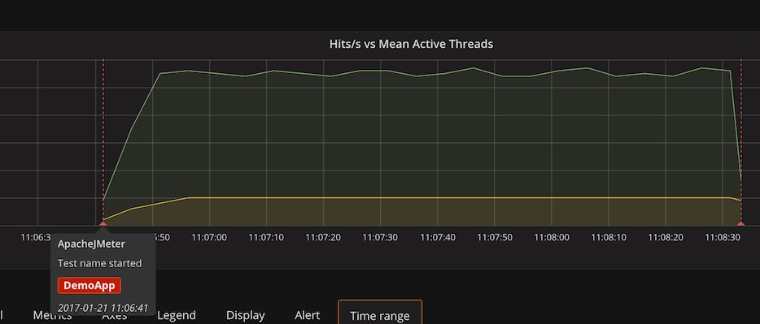
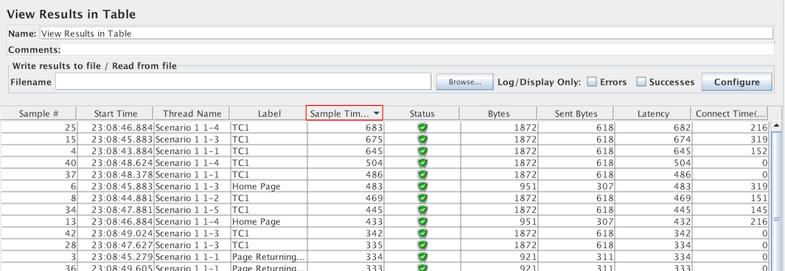

JMeter now requires Java 8. Ensure you use the most up to date version.
JMeter logging has been migrated to SLF4J and Log4j 2.
This affects configuration and 3rd party plugins, see below "Logging changes".
Core improvements
JMeter now provides a new BackendListener implementation that interfaces InfluxDB.
This implementation sends data using Asynchronous HTTP calls to InfluxDB through its HTTP API
and give you the following graphs with annotations:

DNS Cache Manager now has a table to allow static host resolution.
JMS Publisher and Subscriber now allow reconnection on error with pause.
Variables in JMS Publisher are now supported for all types of messages. Add the encoding type of the file to parse its content
XPath Extractor now allows extraction randomly, by index or for all matches.
Response Assertion now allows to work on Request Header, provides a "OR" combination and has a better cell renderer
JMeter now uses Oracle Nashorn Javascript engine instead of Rhino. This provides a faster execution of Javascript.
HTTP HC4 Implementation now provides preemptive Basic Auth enabled by default
Embedded resources download in CSS has been improved to avoid useless repetitive parsing to find the resources
An important work on code quality and code coverage with tests has been done since Sonar has been setup on the project.
You can see Sonar report here.
UX improvements
When running a Test, GUI is now more responsive and less impacting on memory usage thanks to a limitation on the number of Sample Results
listeners hold and a rework of the way GUI is updated
HTTP Request GUI has been simplified and provides more place for parameters and body.
HTTP(S) Test Script Recorder has been simplified and clarified.
A replace feature has been added to Search feature to allow replacement in some elements.
View Results Tree now provides a more up to date Browser renderer which requires JavaFX.
You can now add through a contextual menu think times, this will add think times between samplers and Transaction Controllers
of selected node.
You can now apply a naming policy to children of a Transaction Controller. A default policy exists but you can implement your own
through org.apache.jmeter.gui.action.TreeNodeNamingPolicy
and configuring property naming_policy.impl
Sorting per column has been added to View Results in Table, Summary Report, Aggregate Report and Aggregate Graph elements.

Report/Dashboard improvements
Statistics have been reorganized to clarify report:
It is now possible to customize APDEX thresholds per transaction based on regular expression or sample name.
The below example will apply different thresholds for samples sample(\\d+), sampleA and scenarioB
than default ones (500 and 1500 for satisfied and tolerated thresholds) declared:
PDF Documentations have been migrated and updated to HTML user manual
Incompatible changes
JMeter requires now at least a Java 8 version to run.
JMeter logging has been migrated to SLF4J and Log4j 2, this involves changes in the way configuration is done. JMeter now relies on standard
Log4j 2 configuration in file log4j2.xml
See Logging changes section below for further details.
The following jars have been removed after migration from LogKit to SLF4J (see
Bug
60589):
ApacheJMeter_slf4j_logkit.jar
avalon-framework-4.1.4.jar
avalon-framework-4.1.4.jar
commons-logging-1.2.jar
excalibur-logger-1.1.jar
logkit-2.0.jar
The commons-httpclient-3.1.jar has been removed after drop of HC3.1 support(see
Bug
60727)
JMeter now sets through -Djava.security.egd=file:/dev/urandom the algorithm for secure random
Process Sampler now returns error code 500 when an error occurs. It previously returned an empty value.
In org.apache.jmeter.protocol.http.sampler.HTTPHCAbstractImpl two protected static fields (localhost and nonProxyHostSuffixSize) have been renamed to (LOCALHOST and NON_PROXY_HOST_SUFFIX_SIZE)
to follow static fields naming convention
JMeter now uses by default Oracle Nashorn engine instead of Mozilla Rhino for better performances. This should not have an impact unless
you use some advanced features. You can revert back to Rhino by settings property javascript.use_rhino=true.
You can read this migration guide for more details on Nashorn. See
Bug
60672
Bug
60729
-
The Random Variable Config Element now allows minimum==maximum. Previous versions logged an error when minimum==maximum and did not set the configured variable.
Bug
60730
-
The JSON PostProcessor now sets the _ALL variable (assuming Compute concatenation var was checked)
even if the JSON path matches only once. Previous versions did not set the _ALL variable in this case.
Drop deprecated class org.apache.jmeter.protocol.system.NativeCommand
Drop deprecated class org.apache.jmeter.protocol.http.config.gui.MultipartUrlConfigGui
Drop deprecated class org.apache.jmeter.testelement.TestListener
Drop deprecated class org.apache.jmeter.reporters.FileReporter
Drop deprecated class org.apache.jmeter.protocol.http.modifier.UserSequence
Drop deprecated class org.apache.jmeter.protocol.http.parser.HTMLParseError
Drop unused methods org.apache.jmeter.protocol.http.control.HeaderManager#getSOAPHeader
and org.apache.jmeter.protocol.http.control.HeaderManager#setSOAPHeader(Object)
org.apache.jmeter.protocol.http.util.Base64Encode has been deprecated, you can use java.util.Base64 as a replacement
Logging changes
JMeter logging has been migrated to SLF4J and Log4j 2.
This affects logging configuration and 3rd party plugins (if they use JMeter logging).
The following sections describe what changes need to be made.
Setting the logging level and log file
The default logging level can be changed on the command-line using the -L parameter.
Likewise the -l parameter can be used to change the name of the log file.
However the log_level properties no longer work.
The default logging levels and file name are defined in the log4j2.xml configuration file
in the launch directory (usually JMETER_HOME/bin)
If you need to change the level programmatically from Groovy code or Beanshell, you need to do the following:
import org.apache.logging.log4j.core.config.Configurator;
⋮
final String loggerName = te.getClass().getName(); // te being a JMeter class
Configurator.setAllLevels(loggerName, Level.DEBUG);
Changes to 3rd party plugin logging
3rd party plugins should migrate their logging code from logkit to slf4j. This is fairly easy and can be done by replacing:
Bug
59934
-
Fix race-conditions in CssParser. Based on a patch by Jerome Loisel (loisel.jerome at gmail.com)
Bug
60543
-
HTTP Request / Http Request Defaults UX: Move to advanced panel Timeouts, Implementation, Proxy. Implemented by Philippe Mouawad (p.mouawad at ubik-ingenierie.com) and contributed by Ubik Load Pack (support at ubikloadpack.com)
Bug
60548
-
HTTP Request : Allow Upper Panel to be collapsed
Bug
57242
-
HTTP Authorization is not pre-emptively set with HttpClient4
Bug
60727
-
Drop commons-httpclient-3.1 and related elements. Contributed by Ubik Load Pack (support at ubikloadpack.com)
Bug
60790
-
HTTP(S) Test Script Recorder : Improve information on certificate expiration and have better UX for Start/Stop
Bug
60888
-
HttpRequest : Add option to allow retrial of all requests including NON Idempotent HTTP methods
Bug
60896
-
HTTP(S) Test Script Recorder : Improve UX by reducing number of properties on screen
Other samplers
Bug
60740
-
Support variable for all JMS messages (bytes, object, …) and sources (file, folder), based on
Pull request #241. Contributed by Maxime Chassagneux (maxime.chassagneux at gmail.com).
Bug
60585
-
JMS Publisher and JMS Subscriber : Allow reconnection on error and pause between errors. Based on
Pull request #240 from by Logan Mauzaize (logan.mauzaize at gmail.com) and Maxime Chassagneux (maxime.chassagneux at gmail.com).
Pull request #259 - Refactored and reformatted SmtpSampler. Contributed by Graham Russell (graham at ham1.co.uk)
Controllers
Bug
60672
-
JavaScript function / IfController : use Nashorn engine by default
Listeners
Bug
60144
-
View Results Tree : Add a more up to date Browser Renderer to replace old Render
Bug
60542
-
View Results Tree : Allow Upper Panel to be collapsed. Contributed by Ubik Load Pack (support at ubikloadpack.com)
Bug
52962
-
Allow sorting by columns for View Results in Table, Summary Report, Aggregate Report and Aggregate Graph. Based on a
Pull request #245 by Logan Mauzaize (logan.mauzaize at gmail.com) and Maxime Chassagneux (maxime.chassagneux at gmail.com).
Bug
60590
-
BackendListener : Add Influxdb BackendListenerClient implementation to JMeter. Partly based on
Pull request #246 by Logan Mauzaize (logan.mauzaize at gmail.com) and Maxime Chassagneux (maxime.chassagneux at gmail.com).
Bug
60591
-
BackendListener : Add a time boxed sampling. Based on a
Pull request #237 by Logan Mauzaize (logan.mauzaize at gmail.com) and Maxime Chassagneux (maxime.chassagneux at gmail.com).
Bug
60678
-
View Results Tree : Text renderer, search should not popup "Text Not Found"
Bug
60691
-
View Results Tree : In Renderers (XPath, JSON Path Tester, RegExp Tester and CSS/JQuery Tester) lower panel is sometimes not visible as upper panel is too big and cannot be resized
Bug
60687
-
Make GUI more responsive when it gets a lot of events.
Bug
60791
-
View Results Tree: Trigger search on Enter key in Search Feature and display red background if no match
Bug
60822
-
ResultCollector does not ensure unique file name entries in files HashMap
Bug
60154
-
User Parameters GUI: allow rows to be moved up & down in the list. Contributed by Murdecai777 (https://github.com/Murdecai777).
Bug
60507
-
Added 'Or' Function into ResponseAssertion. Based on a contribution from 忻隆 (298015902 at qq.com)
Bug
58943
-
Create a Better Think Time experience. Contributed by Ubik Load Pack (support at ubikloadpack.com)
Bug
60602
-
XPath Extractor : Add Match No. to allow extraction randomly, by index or all matches
Bug
60710
-
XPath Extractor : When content on which assertion applies is not XML, in View Results Tree the extractor is marked in Red and named SAXParseException. Contributed by Ubik Load Pack (support at ubikloadpack.com)
Bug
60712
-
Response Assertion : Improve Renderer of Patterns
Bug
59174
-
Add a table with static hosts to the DNS Cache Manager. This enables better virtual hosts testing with HttpClient4.
Functions
Bug
60883
-
Pull request #288 - Add ${__escapeXml()} function. Contributed by Michael Osipov (michaelo at apache.org)
I18N
Improve translation "save_as" in French. Based on a
Pull request #252 by Maxime Chassagneux (maxime.chassagneux at gmail.com).
Bug
60785
-
Improvement of Japanese translation. Patch by Kimono (kimono.outfit.am at gmail.com).
Bug
60112
-
Report / Dashboard : Add ability to customize APDEX thresholds per Transaction name. Contributed by Stephane Leplus (s.leplus at ubik-ingenierie.com)
General
Bug
58164
-
Check if file already exists on ResultCollector listener before starting the loadtest
Bug
54525
-
Search Feature : Enhance it with ability to replace
Bug
60530
-
Add API to create JMeter threads while test is running. Based on a contribution by Logan Mauzaize (logan.mauzaize at gmail.com) and Maxime Chassagneux (maxime.chassagneux at gmail.com).
Bug
60514
-
Ability to apply a naming convention on Children of a Transaction Controller. Contributed by Ubik Load Pack (support at ubikloadpack.com)
Bug
60711
-
Improve Delete button behaviour for Assertions / Header Manager / User Parameters GUIs / Exclude, Include in HTTP(S) Test Script Recorder
Bug
60595
-
Add a SplashScreen at the start of JMeter GUI. Contributed by Maxime Chassagneux (maxime.chassagneux at gmail.com).
Bug
55258
-
Drop "Close" icon from toolbar and add "New" to menu. Partly based on contribution from Sanduni Kanishka (https://github.com/SanduniKanishka)
Bug
59995
-
Allow user to change font size with two new menu items and use jmeter.hidpi.scale.factor for scaling fonts. Contributed by Ubik Load Pack (support at ubikloadpack.com)
Bug
60654
-
Validation Feature : Be able to ignore BackendListener. Contributed by Maxime Chassagneux (maxime.chassagneux at gmail.com).
Bug
60684
-
Thread Group: Validate ended prematurely by Scheduler with 0 or very short duration. Contributed by Andrew Burton (andrewburtonatwh at gmail.com).
Bug
60589
-
Migrate LogKit to SLF4J - Drop Avalon, LogKit and Excalibur with backward compatibility for 3rd party modules. Contributed by Woonsan Ko (woonsan at apache.org)
Bug
60565
-
Migrate LogKit to SLF4J - Optimize logging statements. e.g, message format args, throwable args, unnecessary if-enabled-logging in simple ones, etc. Contributed by Woonsan Ko (woonsan at apache.org)
Bug
60564
-
Migrate LogKit to SLF4J - Replace LogKit loggers with SLF4J ones and keep the current LogKit binding solution for backward compatibility with plugins. Contributed by Woonsan Ko (woonsan at apache.org)
Bug
60664
-
Add a UI menu to set log level. Contributed by Woonsan Ko (woonsan at apache.org)
Pull request #276 - Added some translations for polish locale. Contributed by Bartosz Siewniak (barteksiewniak at gmail.com)
Bug
60792
-
Create a new Help menu item to create a thread dump
Bug
60813
-
JSR223 Test element : Take into account JMeterStopTestNowException, JMeterStopTestException and JMeterStopThreadException
Bug
60814
-
Menu : Add Open Recent menu item to make recent files loading more obvious
Bug
60886
-
Build improvements to better enable builds in environments that are behind a proxy. Partly contributed by Michael Osipov (michaelo at apache.org)
Pull request #255 - Utilised Java 8 (and 7) features to tidy up code. Contributed by Graham Russell (graham at ham1.co.uk)
Bug
59435
-
JMeterTestCase no longer supports JUnit3
Bug fixes
HTTP Samplers and Test Script Recorder
Bug
60531
-
HTTP Cookie Manager : changing Implementation does not update Cookie Policy
Bug
60575
-
HTTP GET Requests could have a content-type header without a body.
Bug
60682
-
HTTP Request : Get method may fail on redirect due to Content-Length header being set
Bug
60643
-
HTTP(S) Test Script Recorder doesn't correctly handle restart or start after stop. Contributed by Ubik Load Pack (support at ubikloadpack.com)
Bug
60652
-
HTTP PUT Requests might leak file descriptors.
Bug
60689
-
httpclient4.validate_after_inactivity has no impact leading to usage of potentially stale/closed connections
Bug
60690
-
Default values for "httpclient4.validate_after_inactivity" and "httpclient4.time_to_live" which are equal to each other makes validation useless
Bug
60758
-
HTTP(s) Test Script Recorder : Number request may generate duplicate numbers. Contributed by Ubik Load Pack (support at ubikloadpack.com)
Bug
56939
-
Parameters are not passed with OPTIONS HTTP Request
Bug
60778
-
Http Java Impl does not show Authorization header in SampleResult even if it is sent
Bug
60837
-
GET with body, PUT are not retried even if httpclient4.retrycount is higher than 0
Bug
60842
-
Trim extracted URLs when loading embedded resources using the Lagarto based HTML Parser.
Bug
60928
-
Http Request : Connection Leak when keepalive is used with Embedded Resources
Other Samplers
Bug
603982
-
Guard Exception handler of the JDBCSampler against null messages
Bug
55652
-
JavaSampler silently resets classname if class can not be found
Controllers
Listeners
Bug
60648
-
GraphiteBackendListener can lose some metrics at end of test if test is very short
Bug
60650
-
AbstractBackendListenerClient does not reset UserMetric between runs
Bug
60759
-
View Results Tree : Search feature does not search in URL. Contributed by Ubik Load Pack (support at ubikloadpack.com)
Bug
60859
-
Save Responses to a file : 2 elements with different configuration will overlap
Bug
60428
-
JMeter Graphite Backend Listener throws exception when test ends
and useRegexpForSamplersList is set to true.
Based on patch by Liu XP (liu_xp2003 at sina.com)
Bug
60442
-
Fix a typo in build.xml (gavin at 16degrees.com.au)
Bug
60449
-
JMeter Tree : Annoying behaviour when node name is empty
Bug
60501
-
Search Feature : Performance issue when regexp is checked
Bug
60444
-
Intermittent failure of TestHTTPMirrorThread#testSleep(). Contributed by Thomas Schapitz (ts-nospam12 at online.de)
Bug
60621
-
The "report-template" folder is missing from ApacheJMeter_config-3.1.jar in maven central
Bug
60744
-
GUI elements are not cleaned up when reused during load of Test Plan which can lead them to be partially initialized with a previous state for a new Test Element
Bug
60812
-
JMeterThread does not honor contract of JMeterStopTestNowException
Bug
60857
-
SaveService omits XML header if _file_encoding is not defined in saveservice.properties
Bug
60830
-
Timestamps in CSV file could be corrupted due to sharing a SimpleDateFormatter across threads
Thanks
We thank all contributors mentioned in bug and improvement sections above:
Jerome Loisel (loisel.jerome at gmail.com)
Liu XP (liu_xp2003 at sina.com)
Qi Chen (qi.chensh at ele.me)
(gavin at 16degrees.com.au)
Thomas Schapitz (ts-nospam12 at online.de)
Murdecai777 (https://github.com/Murdecai777)
Logan Mauzaize (logan.mauzaize at gmail.com)
Maxime Chassagneux (maxime.chassagneux at gmail.com)
We also thank bug reporters who helped us improve JMeter.
For this release we want to give special thanks to the following reporters for the clear reports and tests made after our fixes:
Tuukka Mustonen (tuukka.mustonen at gmail.com) who gave us a lot of useful feedback which helped resolve
Bug
60689 and
Bug
60690
Amar Darisa (amar.darisa at gmail.com) who helped us with his feedback on
Bug
60682
The Once Only controller behaves correctly under a Thread Group or Loop Controller,
but otherwise its behaviour is not consistent (or clearly specified).
The numbers that appear to the left of the green box are the number of active threads / total number of threads,
the total number of threads only applies to a locally run test, otherwise it will show 0 (see
Bug
55510).
Note that under some windows systems you may have this WARNING:
java.util.prefs.WindowsPreferences
WARNING: Could not open/create prefs root node Software\JavaSoft\Prefs at root 0
x80000002. Windows RegCreateKeyEx(…) returned error code 5.
The fix is to run JMeter as Administrator, it will create the registry key for you, then you can restart JMeter as a normal user and you won't have the warning anymore.
You may encounter the following error:
java.security.cert.CertificateException: Certificates does not conform to algorithm constraints
if you run a HTTPS request on a web site with a SSL certificate (itself or one of SSL certificates in its chain of trust) with a signature
algorithm using MD2 (like md2WithRSAEncryption) or with a SSL certificate with a size lower than 1024 bits.
This error is related to increased security in Java 8+.
To allow you to perform your HTTPS request, you can downgrade the security of your Java installation by editing
the Java jdk.certpath.disabledAlgorithms property. Remove the MD2 value or the constraint on size, depending on your case.
This property is in this file:
Under Mac OSX Aggregate Graph will show wrong values due to mirroring effect on numbers.
This is due to a known Java bug, see Bug JDK-8065373
The fix is to use JDK8_u45 or later.
View Results Tree may fail to display some HTML code under HTML renderer, see
Bug
54586.
This is due to a known Java bug which fails to parse "px" units in row/col attributes.
See Bug JDK-8031109
The fix is to use JDK9 b65 or later (but be aware that Java 9 is not certified yet for JMeter).
JTable selection with keyboard (SHIFT + up/down) is totally unusable with JAVA 7 on Mac OSX.
This is due to a known Java bug JDK-8025126
The fix is to use JDK 8 b132 or later.


{kind=link}
{kind=link}


{kind=link}